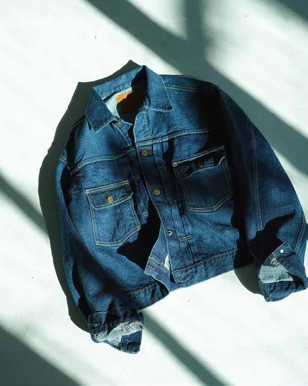
COLLECTION 001TIMELESS / CHARACTERFUL
Heritage
Authentic fabric character, made for the modern archive.
Watch raw fabric become denim.
Denim and gabardine fabrics for fashion brands. Made in our vertically integrated Egyptian mill, from yarn to finished fabric.
EXPLORE FABRICS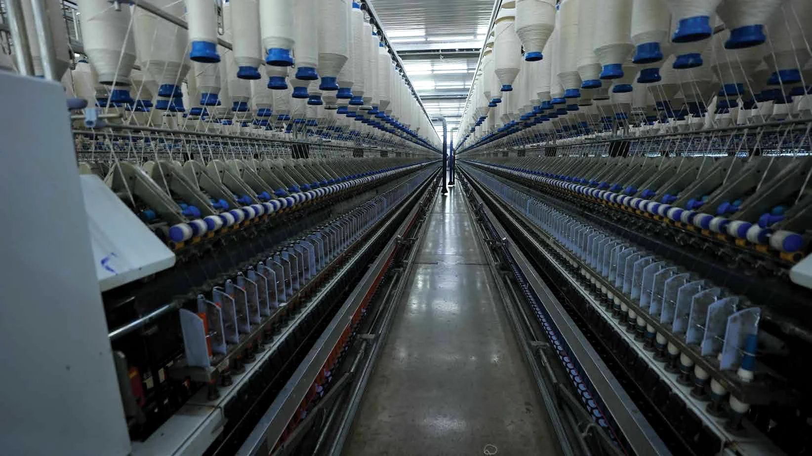
Real places. Real people.
Real denim.
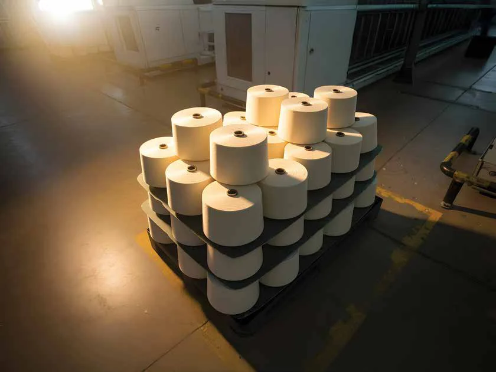
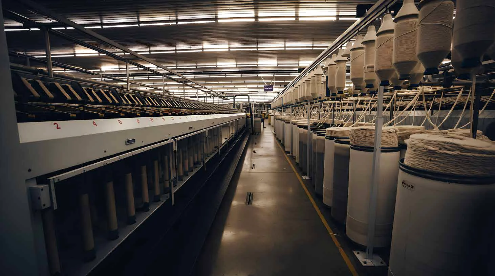
Since 1955, our teams have combined textile know-how with a hands-on approach to making denim and gabardine fabrics.
From spinning and weaving to fabric finishing, our integrated manufacturing model supports consistent quality for brands and buyers.
BEHIND OUR PROCESSCURATED TO MOVE WITH YOU
Explore Heritage, Dynamic, Flex and KB Denim Lab. Select a collection to request details or samples.

COLLECTION 001Authentic fabric character, made for the modern archive.
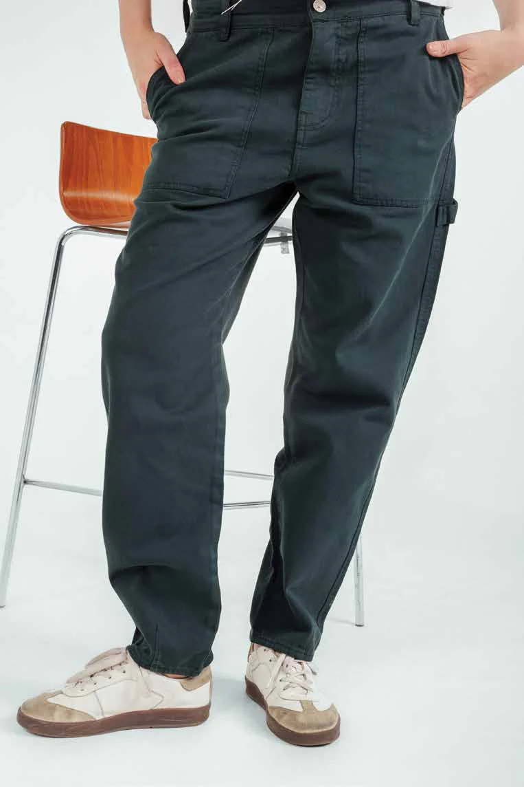
COLLECTION 002Materials for ideas that refuse to stand still.
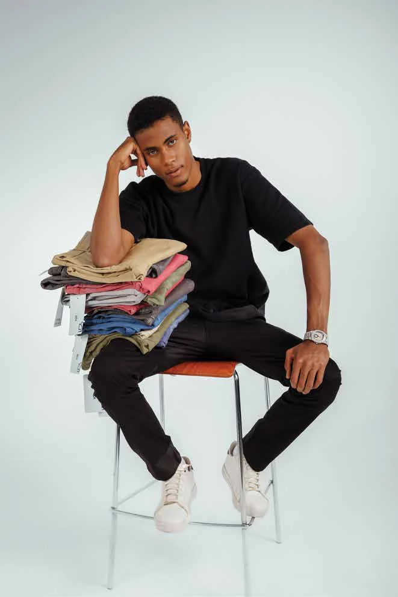
COLLECTION 003Room to move, with comfort at the centre.
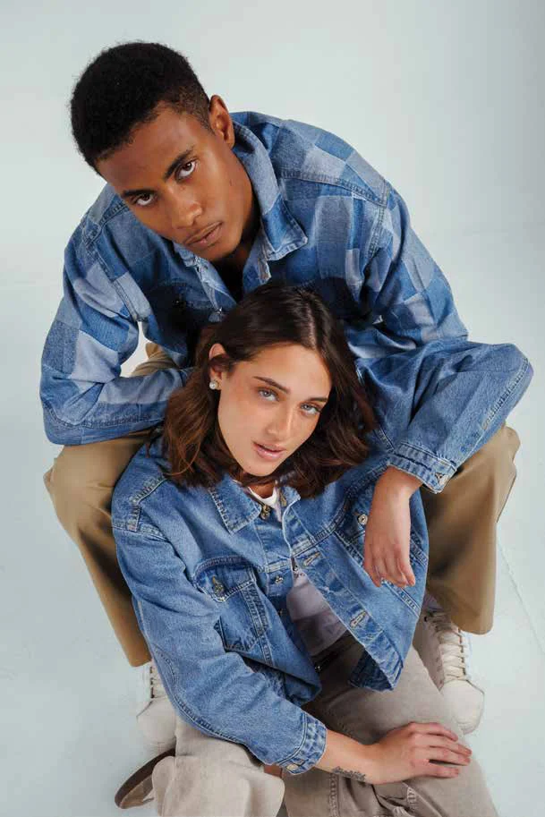
COLLECTION 004Where material curiosity becomes the next possibility.
Three fabrics. One material story. Watch the colours change, then drag, rotate and choose a shade yourself.
A CLOSER POINT OF VIEW
The guided 3D tour starts automatically. Take over any time: drag to rotate, zoom closer or reveal the inside. Illustrative concept model, not KB Denim’s actual facility.
360° / INTERACTIVE ARCHITECTURAL STUDY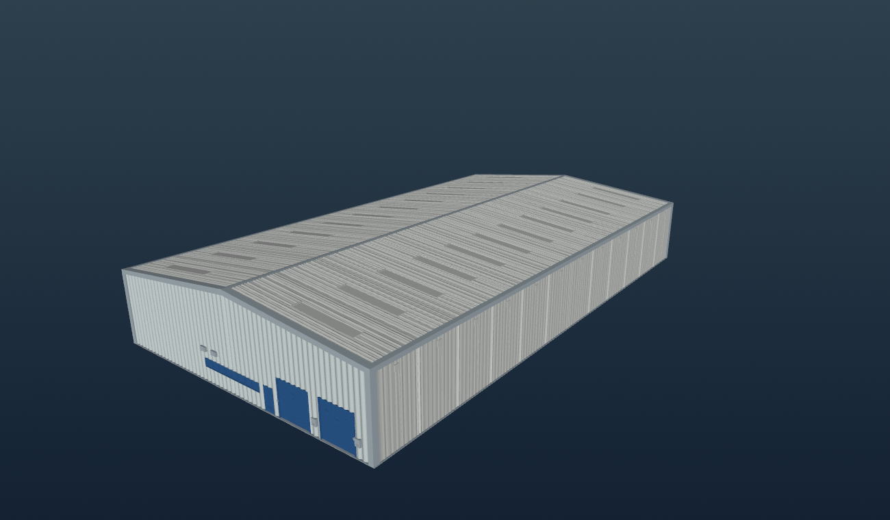
Every object rotates on its own. Drag any model to inspect it from your own angle.
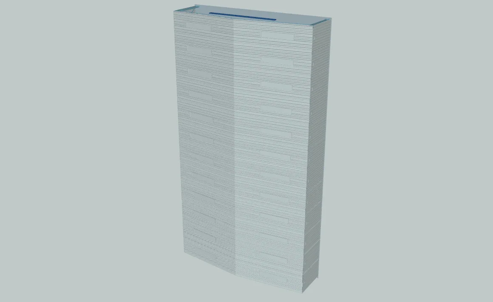
3D OBJECT / 01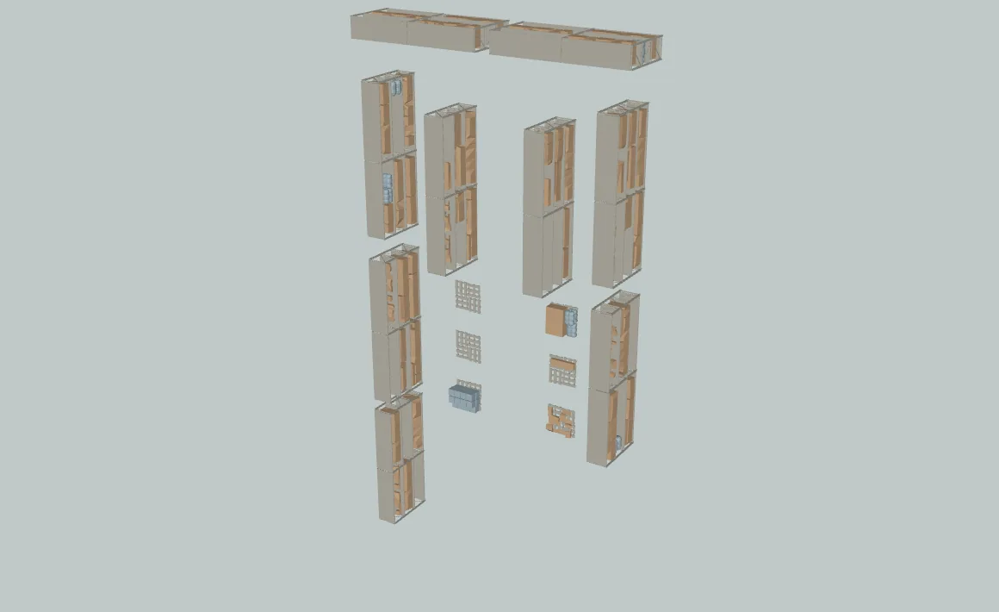
3D OBJECT / 02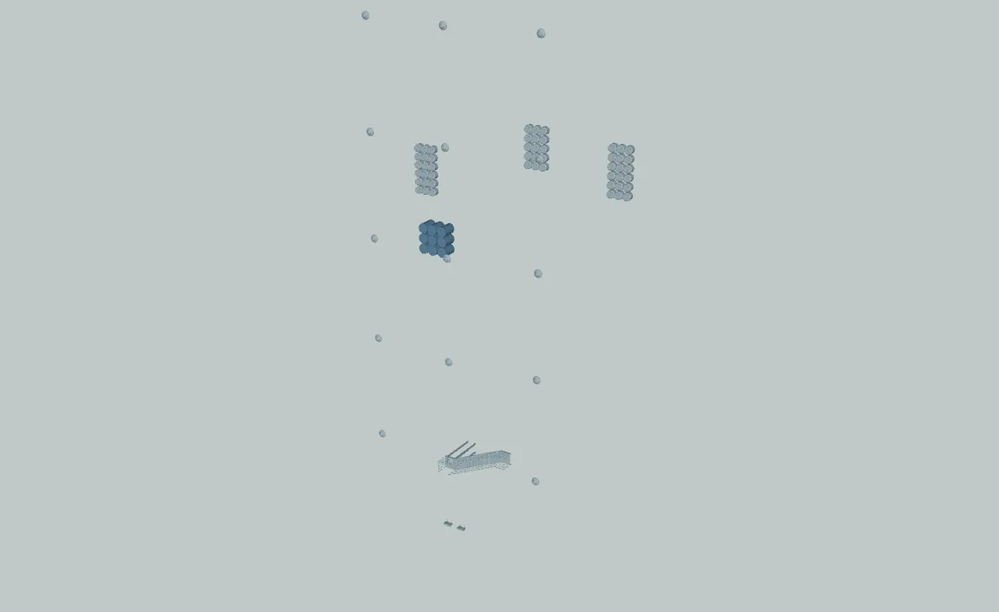
3D OBJECT / 03AN INTERACTIVE OBJECT STUDY
Get closer to the engineering behind manufacturing. Explore a supplied industrial machine concept in full 3D, from its outer housing to the working assemblies.
REAL-TIME 3D · MULTI-ANGLE VIEWERExplore the main stages of our denim manufacturing process.
The right fabric starts with the right yarn. Every choice matters before a single metre is woven.
DISCUSS YOUR FABRIC REQUIREMENTS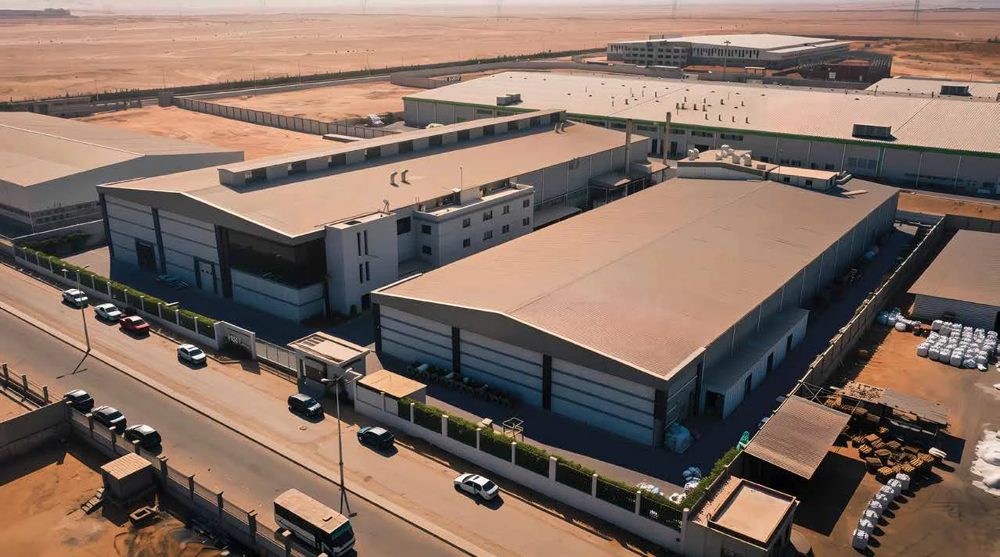
OUR HOME / EGYPTWe believe making better fabric means thinking beyond the fabric—about people, manufacturing, and the decisions that shape the future of our industry.
SOMETHING IN MIND?
Tell us about your fabric needs, desired performance and order requirements. Our team will help you start the conversation.
info@kbdenim.com